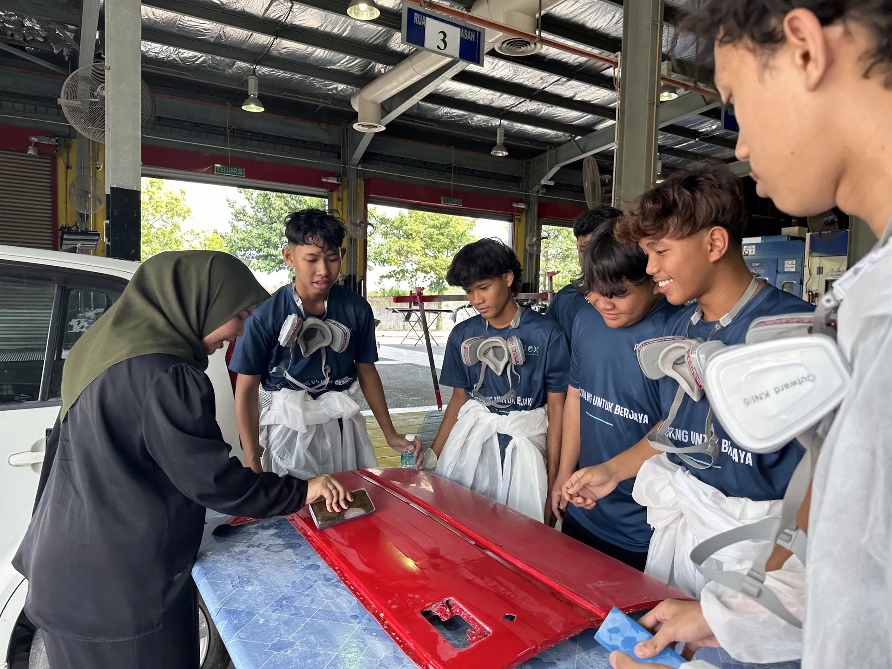
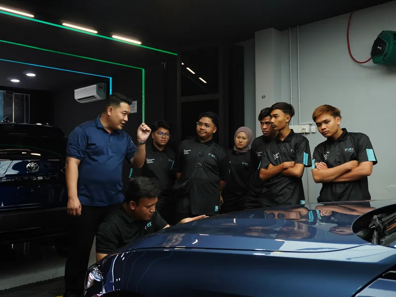
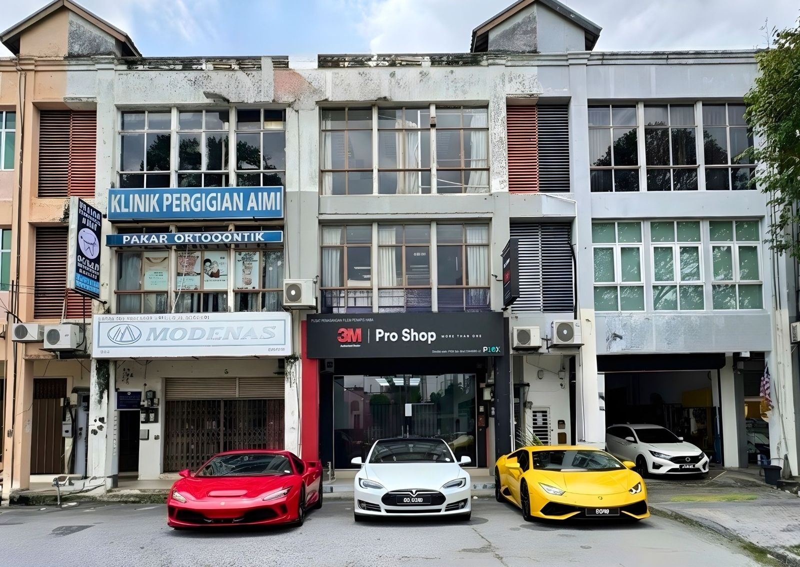
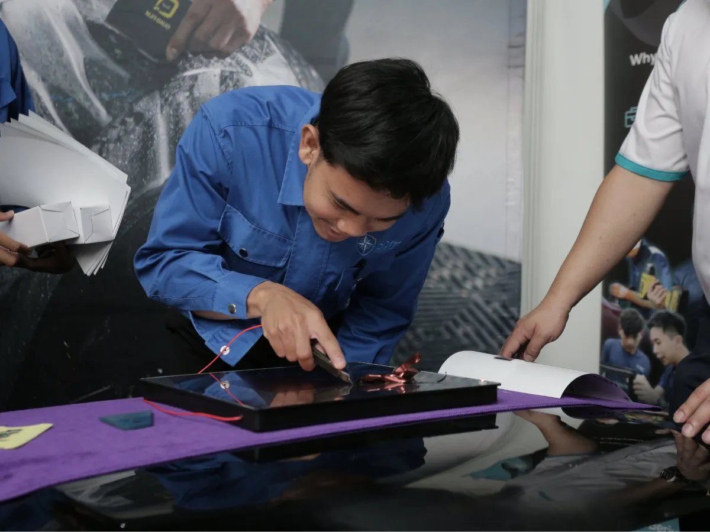

Are our graduates qualified, or are they truly ready?
A qualification opens the door. Competency takes you further.
01Qualification
•What you have studied
•What you have learned
•The level you achieved
Gets you the interview
02Competency
•What you can perform
•How you apply knowledge
•How you solve problems
•How you respond to real situations
Gets you hired
03Employability
•Whether you contribute
•Whether you work professionally
•Whether you can adapt
•Whether you can be trusted
•What difference you make
Keeps you growing
02
A world of work that keeps moving
The future of work is already here
How we work
Automation, AI and digital platforms are changing workplace processes.
What we work with
EV, robotics, smart systems, advanced materials and connected technologies create new technical requirements.
What customers expect
Faster, smarter, more personalised and higher-quality service.
How businesses compete
Through technology, innovation, productivity and talent.

The forces reshaping your industry
01Artificial Intelligence
02Automation and robotics
03Electric vehicles
04Green technology
05Digital transformation
06Smart manufacturing
07Data-driven decisions
08Industry 4.0 and 5.0
TVET is a strategic driver of economic development
01
Employment
Skilled, competent talent for industry.
02
Productivity
Better quality, efficiency and performance.
03
Innovation
Technical knowledge turned into practical solutions.
04
Entrepreneurship
People who build businesses, not only seek jobs.
05
Social mobility
Practical pathways to sustainable careers.
06
Economic growth
Industries that need skilled, adaptable people.
Where does the gap happen?
The education environment
•Curriculum
•Knowledge and theory
•Assessment
•Academic achievement
•Qualification
The gap←→How wide is the jump?
The industry environment
•Market demand and performance
•Productivity and quality
•Customer expectations
•Cost and speed
•Business results
The question we should ask
Neither environment is wrong. The challenge is when the transition between them is too wide. How do we bring industry reality closer to the learning environment?
03
Building your employability
From education to employment
The traditional journey looks like: study, graduate, apply for a job. A stronger one looks like this.
Knowledge
Understanding the fundamentals
Skills
Learning how to perform
Application
Using knowledge in real situations
Industry exposure
Understanding workplace expectations
Competency
Demonstrating consistent performance
Employment
Entering work with confidence
Career growth
Improving and creating value
Beyond the certificate
Employers are not only asking what qualification you hold. They are asking eight other things.
Can you perform?
Execute the technical requirements.
Can you think?
Find the root cause of a problem.
Can you communicate?
With colleagues, customers and management.
Can you adapt?
Learn new tools, technology and processes.
Can you work with others?
Function effectively inside a team.
Can we trust you?
Take responsibility for your work.
Can you keep learning?
Pick up what the job asks for next.
Can you create value?
Contribute positively to the organisation.
What makes a graduate employable?
Knowledge
What I understand
+
Skills
What I can perform
+
Experience
What I have practised
+
Attitude
How I approach work
+
Adaptability
How I respond to change
=
Employability
×
Value
The multiplier: what difference can this person make?
The graduate of tomorrow
BreadthSkills that travel to any job
Communication · Leadership · Digital literacy · Problem-solving · Business awareness · Collaboration · Customer understanding · Creativity
DepthOne discipline, mastered
Engineering · Automotive · IT · Manufacturing · Mechatronics · EV technology · Digital technology
Deep enough to be an expert. Broad enough to adapt.
The end of study is not the end of learning
The traditional model: a line
? now what
Study
Graduate
Get a job
Work
Technology changes. Processes change. Customer expectations change. Business models change. So the question is not only “what qualification do I have?” but “what am I capable of learning next?”
Today's reality: a loop
Don't just collect certificates
Certificate“I studied this.”
Portfolio“I built this.”
Project“I solved this.”
Experience“I handled this.”
Result“I created this value.”
Evidence can be technical projects, research, industry assignments, competitions, innovation, internship achievements, professional certifications, entrepreneurship or community work.
Build evidence, not just credentials.
04
The ecosystem around you
From knowledge provider to talent ecosystem
Universities build knowledge, research capability, critical thinking and professional discipline. Industry integration makes that learning land.
Industry-led projects
Students solve real problems.
Industry mentors
Students learn from practitioners.
Work-based learning
Students experience actual workplaces.
Industry certification
Recognised technical capability.
Industry research
Academic knowledge on real market challenges.
Employment pathways
Students connected to opportunities before graduation.
Industry must also come closer to education
Industry often says graduates are not industry-ready. The fair question back is: how are we helping to prepare them?
Co-designHelp universities understand what competency industry actually needs today.
Co-trainShare technology, equipment, processes and practical knowledge.
Co-assessValidate whether students can perform to industry expectations.
Co-innovateWork with universities on real industry problems.
Co-createBuild internships, employment pathways and entrepreneurship.
Lecturers as bridge builders
Classroomknowledge and theory
EducatorGives the knowledge and the academic foundation.
FacilitatorCreates chances to learn by doing.
MentorHelps you see your own strengths.
Industry connectorBrings practitioners and projects to you.
Talent developerPrepares you to succeed, not only to graduate.
Industryproducts and customers
Students may forget some of the content we teach, but they remember the people who opened their eyes to what they could become.
Employability starts before graduation
Don't wait until final semester to ask “where can I find a job?”. Climb these six steps from year one, and ask yourself the question on each one.
01LearnWhat skills am I building?
02PractiseWhat problems can I solve?
03ExperienceWhat experience am I gaining?
04ConnectWho should I learn from?
05ShowcaseWhat evidence can I show?
06ContributeWhat value can I bring?
05
P10X Academy and what you do next
Connecting TVET to industry
At P10X Academy the question is not only “what should we teach?” but “what does industry need, and how do we prepare talent to meet it?”
✓TVET foundationKnowledge and recognised competency
✓Practical learningHands-on training and application
✓Industry exposureReal technology, products and standards
✓CompetencyYou demonstrate what you can perform
✓Talent developmentTechnical and professional capability
✓EmploymentConnection with industry opportunities
CertificateCareer

You learn on the shop floor
•Coaches from the trade, not only from the classroom
•Real vehicles, real products, real customer standards
•Assessment on what you can perform, not only what you can recall
•Work you can photograph, explain and show an employer
Every job on the floor is somebody's car. That is what makes the standard real.
Where you train: Sunway
Not a simulated workshop. You train on a live outlet floor, with real vehicles and paying customers.

3M Pro Shop, Sunway

On the floor, on real work
The industry you will meet
Brands that co-design, co-train, co-assess and hire.
Real technology, real standards, real customers, while you are still a student.
Are we preparing students for the jobs of today, or for the world of tomorrow?
Our responsibility is not to predict the future for students. It is to prepare them to navigate it: able to learn, adapt, solve problems, work with others, use technology and create value.
The future should not be academia or industry. It should be:
Academia × Industry
Knowledge
×
Skills
×
Experience
×
Technology
×
Innovation
×
Opportunity
=
Future-ready talent
Let's not just produce graduates. Let's build people who can create value.